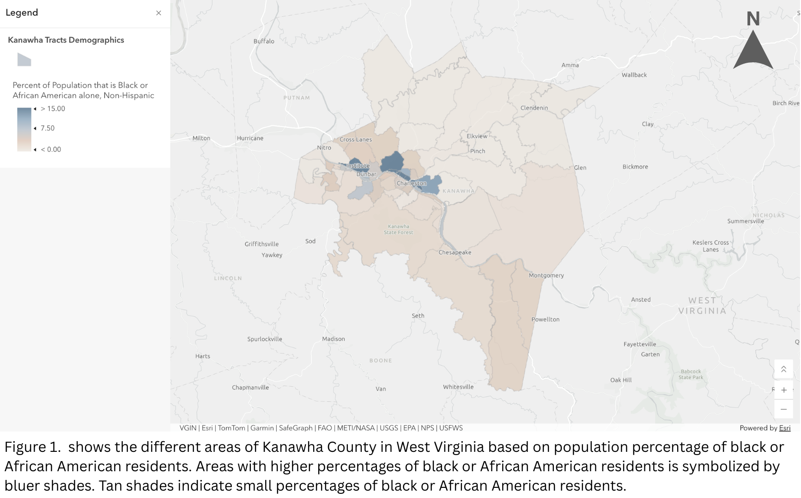
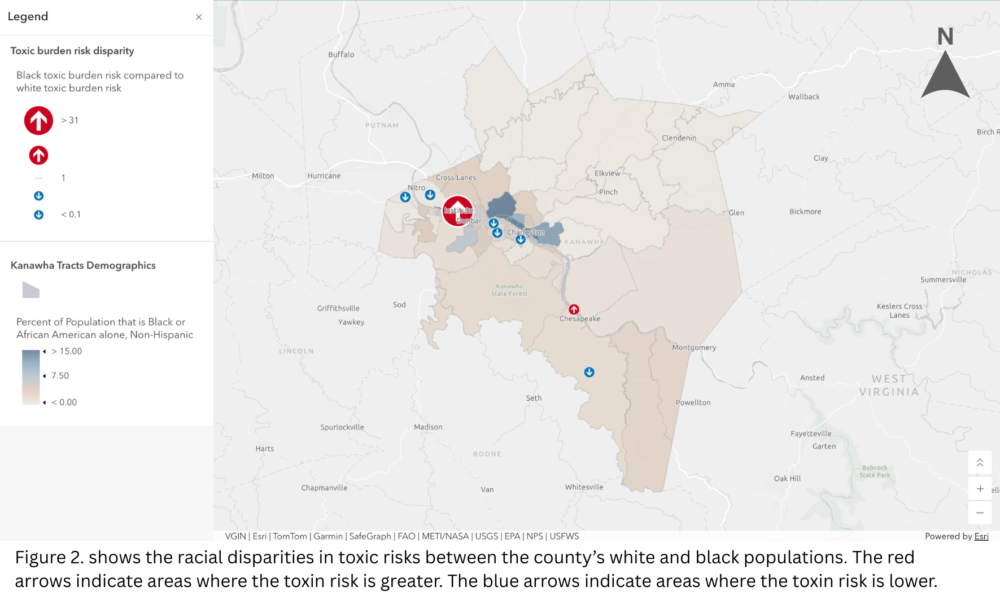
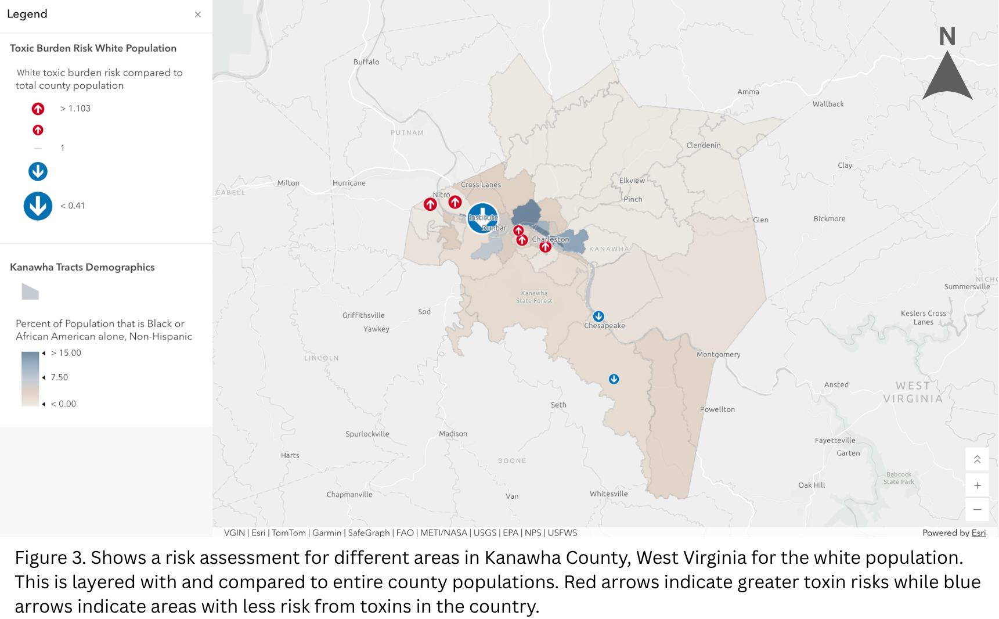

Visualize Inequity in Toxic Exposure Risk
Explored environmental injustice through toxic risk assessments for predominantly black or African American residents and white residents in Kanawha County, West Virginia.
Completed using the Esri Learn Tutorial "Visualize Inequity in Toxic Exposure Risk" Esri provided tutorial data sources and methodology.
Map Products



Tools & Methods
ArcGIS Online, ArcGIS Arcade expressions, calculate and visualize racial disparities from acquired demographic data.
Data & Sources
Toxic emission data obtained from the EPA Toxics Release Inventory 2021 data for WV. Demographics data obtained from Esri, Census Bureau's API for American Community Survey, and US Census TIGER geodatabases. Base layer canvas obtained from Esri, TomTom, Garmin, FAO, NOAA, USGS, OpenStreetMap contributors, and the GIS User Community.